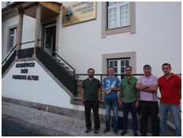

Basquetebol regressa aos Penedos Altos
Académico dos Penedos Altos e o Clube Desportivo da Covilhã acordaram dinamizar a pratica do basquetebol.
Depois de vários anos ausente, o basquetebol vai regressar aos Penedos Altos. A modalidade é uma das vertentes de um protocolo que as duas coletividades deste bairro da cidade da Covilhã assinaram no sábado, dia 17. O Académico dos Penedos Altos (APA) e o Clube Desportivo da Covilhã (CDC), históricos rivais, juntaram esforços para dar corpo a um projeto que pretende restaurar a prática do basquete no bairro, onde sempre teve tradição e adeptos.
“Esperamos com esta conjugação de esforços dar corpo a um projeto interessante que pode devolver os moradores do bairro às bancadas de um pavilhão que, à imagem da própria coletividade, tem estado praticamente desativado há quase dez anos”, adianta Pedro Carriço, presidente do CDC.
Já Miguel Rebelo, presidente do Académico, realça que o protocolo entre os dois emblemas vizinhos “peca por tardio”. “Era uma pena ter um pavilhão no bairro com um uso muito limitado e sem competição. Nós queremos ter atividade desportiva e o CDC, para além de ter o mesmo desejo, quer dar um uso mais adequado ao seu recinto. Por isso juntou-se o útil ao agradável”, acrescenta o responsável.
O protocolo prevê que os dois emblemas invistam no projeto e dividam as despesas em partes iguais e implica a criação de uma comissão de gestão formada por elementos dos dois clubes. Mas este acordo não se limita ao basquetebol. Também no xadrez, as duas coletividades já estão a funcionar em conjunto com a criação de uma equipa mista que disputará os jogos na sede do Académico.
publicado em: quarta-feira, 14 de Maio de 2014